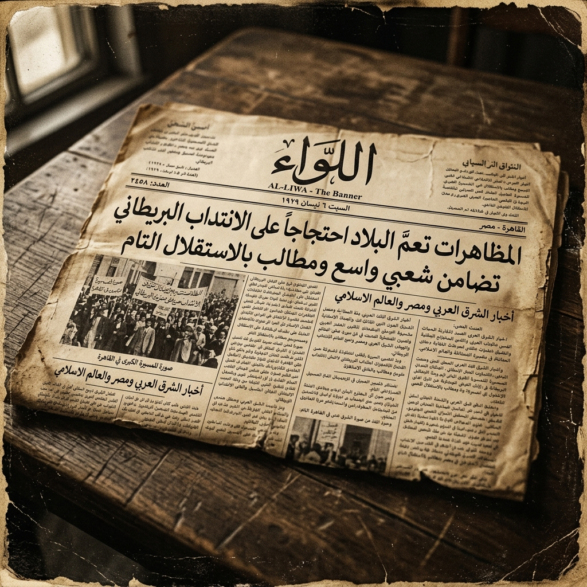
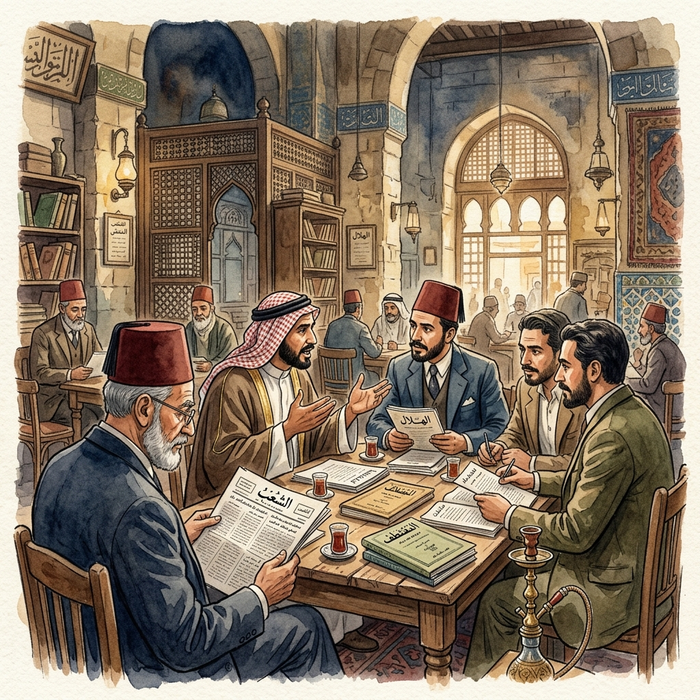
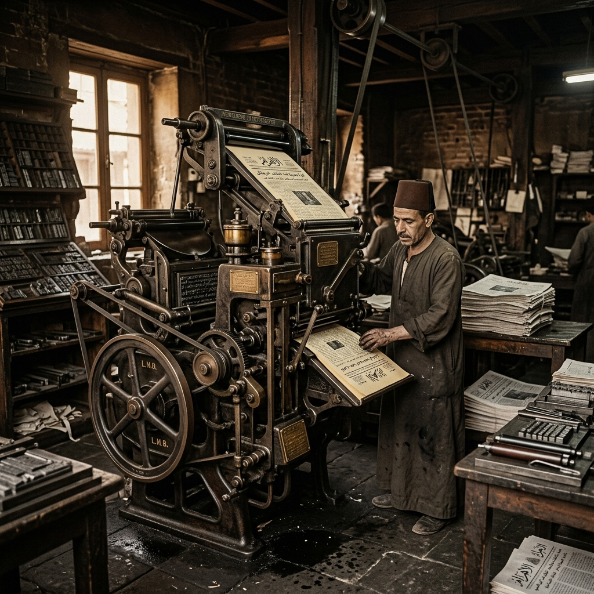

الصحيفة
منبر فكري عربي حر — تأسست برؤية كلاسيكية معاصرة
نشأة الفكرة وجذورنا الفكرية
تستلهم "الصحيفة" هويتها البصرية والتحريرية من العصر الذهبي للصحافة المكتوبة في المشرق العربي خلال أواخر القرن التاسع عشر وأوائل القرن العشرين. نرى في تلك الفترة المضيئة، التي قادتها دوريات خالدة مثل المقتطف (1876)، والهلال (1892)، والمنار، ركيزة أساسية للنهضة الفكرية العربية المعاصرة.
جاءت فكرة إطلاق المنصة لتكون جسراً معرفياً يدمج عراقة الكلمة المطبوعة بمرونة النشر الرقمي، متخذة من التحليل الرصين والعمق الفلسفي منهاجاً لا يحيد عن الحقيقة والموضوعية لتغطية شؤون الفكر والاقتصاد والتكنولوجيا والتاريخ.
"نؤمن بأن الكلمة الصادقة والتحليل الموضوعي هما اللبنة الأساسية في بناء مجتمعات واعية قادرة على صياغة مستقبلها بحرية واقتدار."
أرشيفنا المصور: محطات تاريخية
لقطات مصورة توثق الروح التاريخية لصالونات الفكر والمطابع العربية القديمة التي نستلهم منها رؤيتنا اليومية:

العدد الافتتاحي الأول
نسخة أرشيفية نادرة من العدد الورقي التجريبي المطبوع في مطابع القاهرة التاريخية بنمطه القديم.

صالون التحرير الفكري
رسم فني يجسد نقاشات الكتاب والمفكرين في إعداد المقالات الفلسفية والاقتصادية الأولى للمنصة.

المطبعة التاريخية الكلاسيكية
آلة طباعة الحروف اليدوية النحاسية التي استعملت قديماً لصف الحروف العربية وتوزيع الكتل النصية.
خطنا الزمني المعرفي
رحلة تطور الفكرة حتى تجسيدها المعاصر كمنصة تحليلية شاملة:
الجذور والاستلهام الفكري
استلهام نمط الصحف الفكرية التاريخية في المشرق العربي وبداية دراسة الأنماط التحريرية القديمة.
إطلاق الهيكل التجريبي
تدشين المنصة الرقمية "الصحيفة" كتجربة إعلامية رائدة تهدف لإعادة الاعتبار للمقالات الرصينة العميقة.
الأقسام الخمسة الأساسية
اعتماد الأقسام الخمسة الثابتة للصحيفة لتغطية أهم حقول المعرفة المعاصرة: فكر، اقتصاد، سياسة، صحة، وتكنولوجيا.
الهيئة التحريرية والاستشارية
يشرف على تدقيق المواد المنشورة والتزامها بالمعايير الفكرية والأخلاقية نخبة من الباحثين والكتاب:
رئيس التحرير
رئيس التحرير العامأستاذ الفلسفة المقارنة والباحث في نظريات التحديث والإعلام الثقافي العربي.
فاطمة الكاتبة
مديرة التحرير لقسمي الفكر والتاريخكاتبة وروائية متخصصة في تاريخ الحركات الفكرية والنهضة الأدبية العربية الحديثة.
يوسف المحلل
رئيس تحرير الاقتصاد والتقنيةمحلل مالي وكاتب صحفي متخصص في التنمية الاقتصادية وتحديات التحول الرقمي.
تواصل معنا
لديك اقتراح، استفسار أو تود الانضمام لفريق الكتاب والباحثين؟ يسعدنا دائماً استقبال رسائلكم وملاحظاتكم.